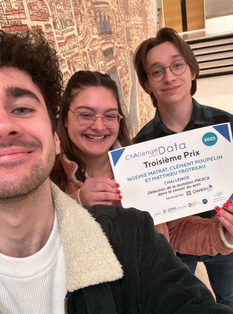

Challenge Data 2023 | OWKIN
En fin d’année 2023, dans le cadre de l’unité d’enseignement Apprentissage statistique du master Ingénierie Statistique de l’université de Nantes (et en commun avec l’école central nantes), j’ai eu l’occasion de participer au Challenge Data.
Suite à cela, mes partenaires de travail et moi même avons réussi à obtenir la troisième place (sur 189 participants) pour le challenge que nous avons choisi.
Je remercie donc chaleuresement mes partenaires de travail Noémie Matrat et Matthieu Trotreau ainsi que le Collège de France pour leur invitation à la remise des prix.
 Le Laboratoire de Mathématiques Jean Leray
Challenge Data
Chaque année, des challenges en Data Science sont organisés à partir de données fournies par les services publics, les entreprises ou les laboratoires. Les saisons sont lancées en janvier, avec la sortie d’une dizaine de nouveaux défis ; les challenges sont présentés dans le cadre du cours de Stéphane Mallat au Collège de France courant janvier. Une remise des prix récompensant les meilleurs participants de la saison précédente a habituellement lieu en février au Collège de France.
La plateforme Challenge Data est gérée par l’équipe Data (ENS Paris), en partenariat avec le Collège de France et le Data Lab de l’Institut Louis Bachelier. Elle est soutenue par la Chaire CFM, l’Institut PRAIRIE et l’IDRIS du CNRS.
Contexte du challenge proposé par Owkin
anatomopathologie
L’anatomopathologie est une spécialité médicale dédiée à l’étude morphologique des anomalies des tissus biologiques. L’analyse de ces tissus constitue une étape critique pour de nombreux diagnostics, en particulier en oncologie où elle définit le gold standard (routine clinique de référence). Les échantillons de tissus sont généralement prélevés lors d’une intervention chirurgicale ou d’une biopsie. Après avoir été prétraités par des techniciens experts, les pathologistes examinent les échantillons au microscope afin d’évaluer plusieurs biomarqueurs tels que la nature de la tumeur, le stade du cancer, etc.
Mutation PIK3CA dans le cancer du sein
Des études scientifiques récentes ont également montré que les lames d’histopathologie contiennent des informations qui sous-tendent le génotype de la tumeur. Ces lames pourraient donc être utilisées pour prédire les altérations génomiques telles que les mutations ponctuelles. L’une de ces altérations génomiques est la mutation PIK3CA dans le cancer du sein. Cette mutation est observée dans environ 30 à 40 % des cancers du sein et se retrouvent le plus souvent dans les cancers à récepteurs positifs d’œstrogènes (ER+). Les mutations PIK3CA ont été associées à de bons résultats. Plus important encore, les patientes porteuses de cette mutation, résistante au traitement endocrinien, peuvent répondre à une classe de thérapie ciblée - l’inhibiteur de PI3Kα.
Objectif du challenge
La méthode actuelle pour identifier les mutations PIK3CA est le séquençage de l’ADN, qui nécessite une expertise technique et bioinformatique qui n’est pas accessible dans tous les laboratoires. Une solution automatisée pour détecter la mutation PIK3CA présente une grande pertinence clinique car elle pourrait fournir un outil de dépistage rapide et fiable permettant à davantage de patientes, notamment dans les centres tertiaires, d’être éligibles à des thérapies personnalisées associées à de meilleurs résultats.
Le challenge proposé par Owkin est un problème de classification binaire faiblement supervisé : l’objectif est de prédire, à partir d’une lame histologique numérisée en haute résolution, si un patient présente une mutation du gène PIK3CA.
L’apprentissage faiblement supervisé est crucial en pathologie digitale compte tenu du volume extrêmement grand des lames histologiques une fois numérisées (> 100 000x100 000 pixels). En l’état, ces lames ne peuvent pas être traitées telles quelles par des algorithmes de machine learning. Il faut donc préalablement, pour chaque lame, en extraire des images plus petites (appelées tuiles ou tiles) de 224x224 pixels (environ 112 µm²). Puisqu’une lame est associée à une seule annotation (présence ou absence de mutation), et est partitionnée en un ensemble de tuiles, les méthodes d’apprentissage utilisées doivent apprendre à aggréger intelligemment ces tuiles pour produire un label global. Ces méthodes s’inscrivent dans le champ du multiple-instance learning (MIL). Plus précisément, si une des tuiles de la lame contient un motif local porteur de la mutation, alors l’algorithme devra prédire la présence globale de mutation ; à l’inverse, si toutes les tuiles ne montrent pas de tel(s) motif(s), l’algorithme devra prédire l’absence globale de mutation. Si l’approche de la supervision faible peut bruiter le signal initial (certaines tuiles sont complètement ininformatives pour prédire le label global), elle évite en revanche l’annotation manuelle de lames histologiques par des anatomo-pathologistes, opération coûteuse et longue en pratique.
Dans ce challenge, nous cherchons à prédire si un patient présente une mutation du gène PIK3CA à partir d’une lame histologique numérisée. Pour des raisons computationnelles, nous avons conservé un total de 1 000 tuiles par lame. Chaque tuile a été sélectionnée de manière à ce qu’elle contienne du tissu.